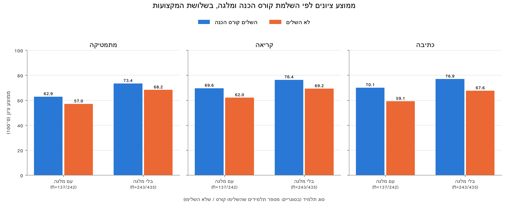

הנתונים הם תוצאות מבחנים של תלמידים מאחד מבתי הספר הגדולים בישראל. לכל תלמיד יש ציון במתמטיקה, בקריאה ובכתיבה (0–100), וחמישה פרטי רקע: מלגה (בגלל הכנסה נמוכה של ההורים), השכלת ההורים, השלמת קורס הכנה למבחן (לא חובה), מגדר ומוצא.
המטרה: לבדוק אילו גורמים קשורים לציונים, כדי לזהות תלמידים שעשויים להזדקק לעזרה.
העבודה נעשתה בשישה שלבים, בעזרת שני סוכני AI עם תפקידים מוגדרים: נועה, סוכנת ניקוי, ויואב, סוכן חקר. בכל שלב כתבתי פרומפט, קיבלתי משוב, שיפרתי אותו ובדקתי את התוצאה לפני ואחרי. החישובים והגרפים נעשו ב־Python (pandas ו־matplotlib), והכלים הסטטיסטיים הם אלה שנלמדו בקורס: ממוצע, חציון ו־IQR.
| בדיקה | לפני | פעולה | אחרי |
|---|---|---|---|
| מספר שורות | 1,068 | – | 1,057 |
| שורות עם מידע חסר | 11 | נמחקו | 0 |
| שורות כפולות | 68 | נשארו בכוונה | 68 |
| ציונים מחוץ ל־0–100 | 0 | לא נדרש תיקון | 0 |
| כתיב לא אחיד | 0 | לא נדרש תיקון | 0 |
למה הכפילויות נשארו: בקובץ אין מזהה תלמיד, ולכן ייתכן ששתי שורות זהות הן שני תלמידים שונים עם אותם ציונים. בדיקה הראתה שהן משנות את הממוצעים בפחות מ־0.1 נקודה.
החקר בדק כל אחד מחמשת הגורמים בנפרד, בכל אחד משלושת המקצועות. עלו שתי מסקנות:
נמצאו 23 ציונים חריגים לפי IQR, כולם נמוכים. הם לא נמחקו, כי הם בטווח התקין וייתכן שהם אמיתיים.
האם השלמת קורס הכנה קשורה לציונים גבוהים יותר גם כשמתחשבים במלגה ובהשכלת ההורים, ובאיזה מקצוע (מתמטיקה, קריאה או כתיבה) הקשר הזה חזק יותר?
למה קורס ההכנה: מבין חמשת הגורמים, זה היחיד שבית הספר יכול לשנות. בדיקה מקדימה הראתה שהוא לא קשור למלגה: כ־36% עשו אותו בשתי הקבוצות. לכן אפשר לבדוק אותו בנפרד ממנה.
המדד המרכזי הוא הפער: הממוצע של מי שהשלים קורס פחות הממוצע של מי שלא השלים, בנקודות.

| השכלת ההורים | מתמטיקה | קריאה | כתיבה |
|---|---|---|---|
| תיכון חלקי | +5.179 השלימו · 107 לא | +7.079 השלימו · 107 לא | +9.379 השלימו · 107 לא |
| תיכון מלא | +3.959 השלימו · 146 לא | +4.659 השלימו · 146 לא | +8.159 השלימו · 146 לא |
| לימודים על־תיכוניים חלקיים | +6.584 השלימו · 157 לא | +9.784 השלימו · 157 לא | +11.784 השלימו · 157 לא |
| תואר מכללה | +6.189 השלימו · 153 לא | +8.489 השלימו · 153 לא | +11.289 השלימו · 153 לא |
| תואר ראשון | +5.849 השלימו · 74 לא | +5.549 השלימו · 74 לא | +7.949 השלימו · 74 לא |
| תואר שני | +1.020 השלימו · 40 לא | +4.020 השלימו · 40 לא | +6.320 השלימו · 40 לא |
הפער חיובי בכל 18 השילובים, ובכל רמת השכלה הוא הגדול ביותר בכתיבה.
כן, השלמת קורס הכנה קשורה לציונים גבוהים יותר. הפער מופיע גם אצל תלמידים עם מלגה וגם אצל תלמידים בלי מלגה, ובכל רמות השכלת ההורים, ולכן המלגה והשכלת ההורים לא מסבירות אותו. הקשר חזק יותר בכתיבה, ובעיקר אצל תלמידים שהשכלת הוריהם היא לימודים על־תיכוניים חלקיים או תואר מכללה (כ־11 נקודות).
אני בטוח יחסית בתשובה גם בלי מבחן מובהקות, כי הפער עקבי (חיובי בכל 18 השילובים) והקבוצות גדולות (380 מול 677).
האם אני מרוצה מהתשובה? חלקית. הנתונים עונים על השאלה אם יש קשר, אבל לא על השאלה אם הקורס גורם לשיפור. חסר גם מידע על ההורים: אם הם היו יודעים על הממצאים, האם הם היו תומכים בכך שילדיהם יעשו את הקורס?
ההמלצה לבית הספר: לעודד את כל התלמידים לעשות את קורס ההכנה, ולא רק את החלשים. כדאי להתחיל בתלמידים עם מלגה ולשים דגש על כתיבה, כי שם הפער הגדול ביותר. אחר כך לבדוק שוב את הציונים, כדי לראות אם הקורס באמת גורם לשיפור.
גם AI טועה, ולכן בדקתי כל תוצאה לפני ואחרי. ארבע טעויות נתפסו ותוקנו בדרך:
group C ל־group c, למרות שהערכים כבר היו אחידים.| קובץ | תוכן |
|---|---|
Student_tests_results.xlsx | הנתונים המקוריים (לא שונו) |
outputs/Student_tests_results_clean.csv | הנתונים אחרי ניקוי |
outputs/dashboard.html | הדשבורד |
docs/process_log.md | תיעוד מלא של כל שלב, כולל הפרומפטים והמשוב |
scripts/ | הקוד של הניקוי, החקר, הגרפים והדשבורד |